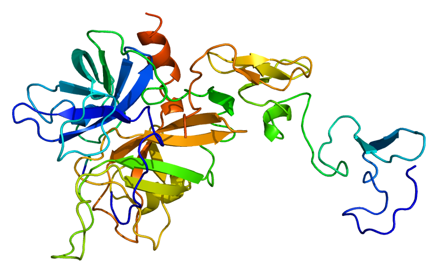
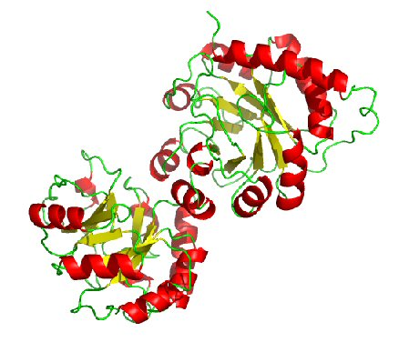

|  |  |
|

|

Experimental data (models and alignments) in CASP11
References: [1] Li J, Deng X, Eickholt J, Cheng J: Designing and Benchmarking the MULTICOM Protein Structure Prediction System. BMC Structural Biology 2013, 13(1):2. [2] Cheng J, Li J, Wang Z, Eickholt J, Deng X: The MULTICOM toolbox for protein structure prediction. [3] Wang Z, Eickholt J, Cheng J: MULTICOM: a multi-level combination approach to protein structure prediction and its assessments in CASP8. Bioinformatics 2010, 26(7):882-888. |
Dr. Jianlin Cheng's Bioinformatics and Systems Biology Laboratory, Department of Computer Science, University of Missouri-Columbia